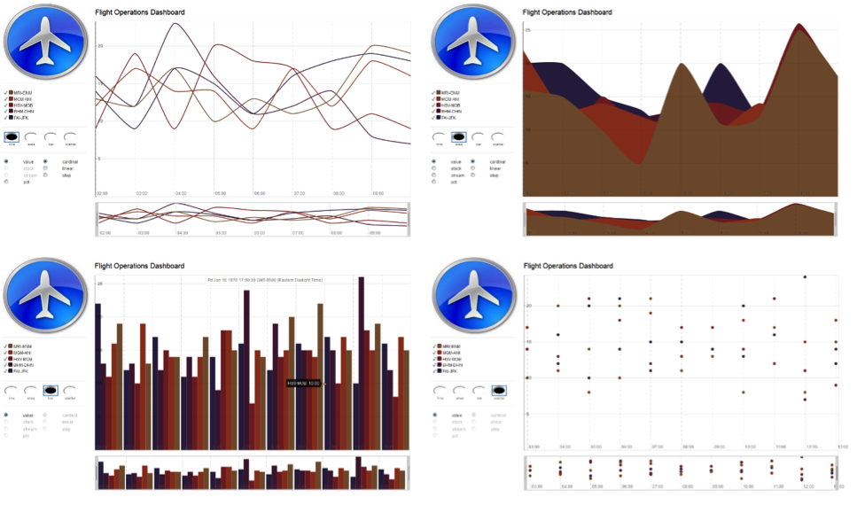
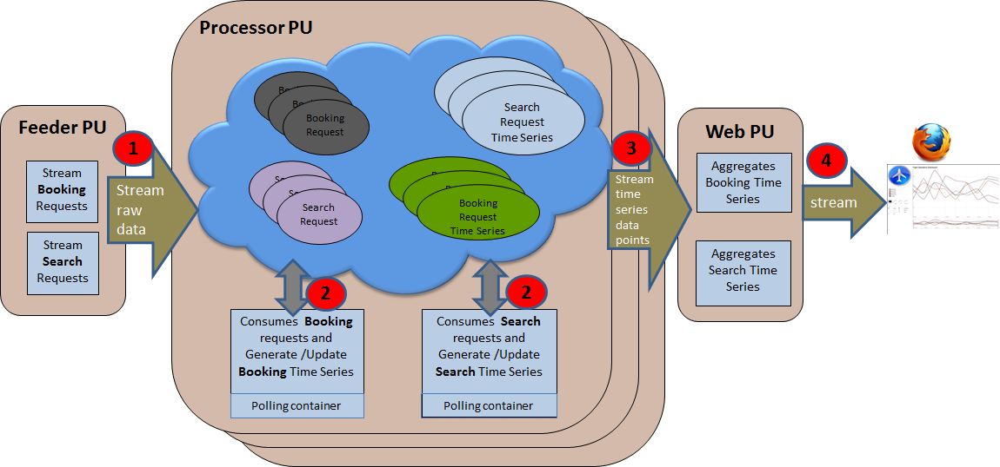
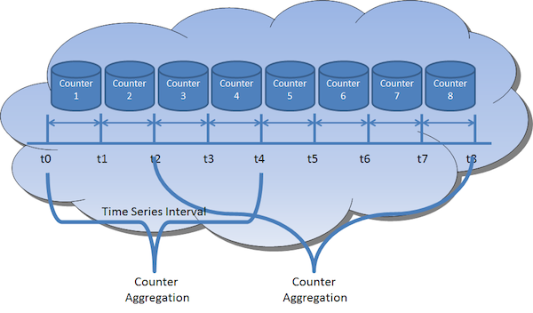
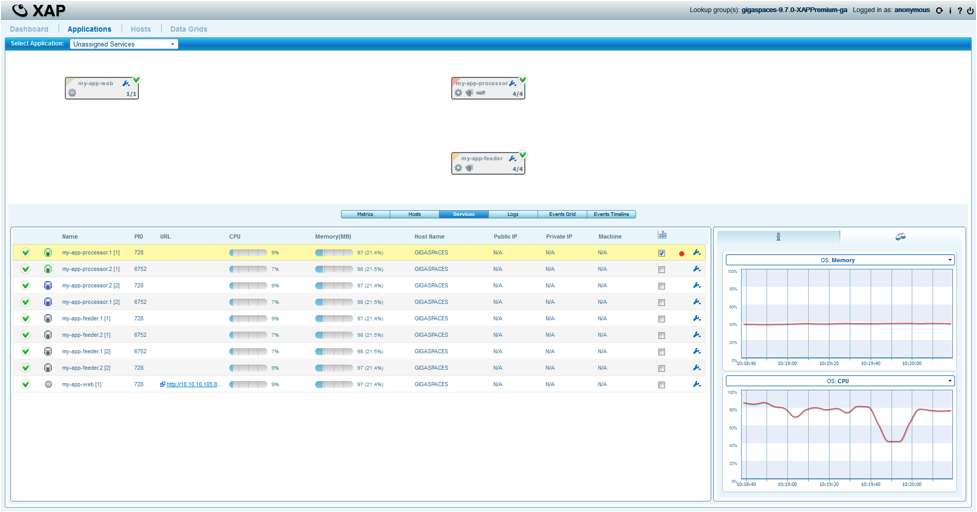
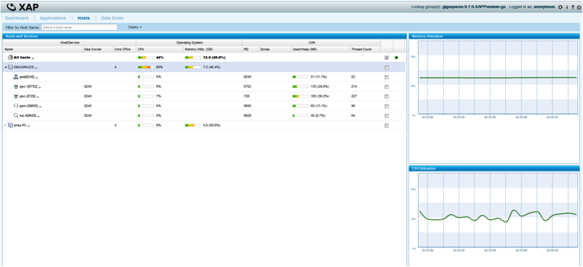
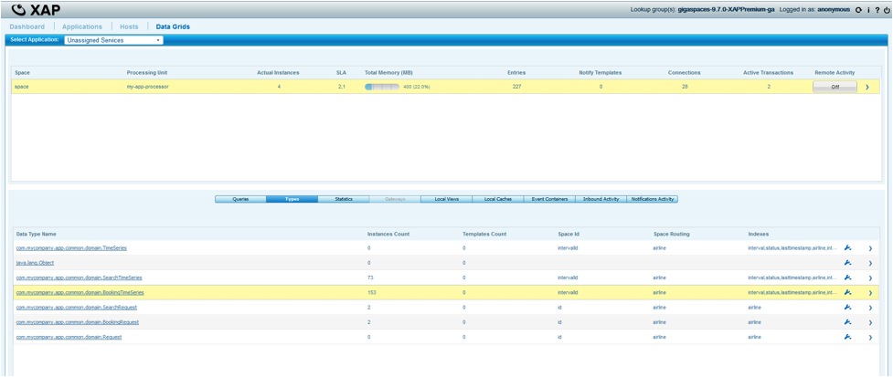
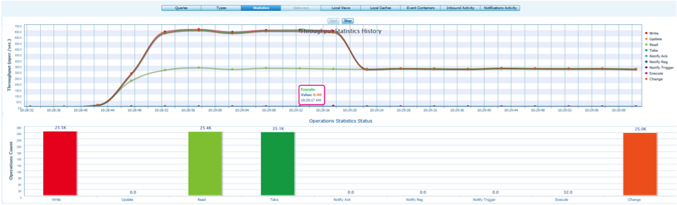

Phase 1 - Sending the Space tasks to be executed:

Phase 2 - Getting the results back to be reduced:

| Author | Product Version | Reference | Download |
|---|---|---|---|
| Allen Terleto | 9.7 |
A Time Series is a sequence of data points, measured typically at successive points in time spaced at uniform time intervals (or space). If observations are made on some phenomenon throughout time, it is most sensible to display the data in the order in which they arose, particularly since successive observations will probably be dependent. Time series are best displayed in a scatter plots and line charts. The series value X is plotted on the vertical axis and time t on the horizontal axis. Time is called the independent variable (in this case however, something over which you have little control). There are two kinds of time series data:
X at time t, X(t).Xt.Good examples of time series are the daily closing value of the Dow Jones, NASDAQ, and S&P indices. They are used in statistics, signal processing, pattern recognition, econometrics, mathematical finance, weather forecasting, earthquake prediction, control engineering, astronomy, and communications engineering.
This demo will provide a visual representation of a running time series which is being updated in real-time. Internally concurrent executor threads will mimic the generation of events, by random airline customers, looking to search and book flights to various points of origin. Each event will be processed, categorized, and captured within am in-memory time series object.
The User Interface for this demo will mock an Airline Flight Operations Dashboard which will consistently update a charted time series. The horizontal axis, t, which is denoted in hours will be updated every 2 seconds. The vertical axis, X, represents the amount of booked flights from a set source airport to a destination airport. For clarity and readability, this demo will only display the top 5 source and destination pairs.
It is designed to be real-time, mission-critical and provide:
The following
Once the provided web processing unit is deployed you can access the demo's web page at http://host:port/my-app-web/index.jsp. (i.e. http://localhost:8080/my-app-web/index.jsp) It will display the generic airline's top-5 predetermined source and destinations airport sets in the left panel. Upon load, the rendered graph will show a time series in the form of a line chart. Its initial data will be limited to the last 10 inactive intervals that reside in the space. The graph can be altered on the fly in the form of area, bar and scatter charts (shown below). Once the loading process is complete the graph will update itself every 2 seconds showing the latest inactive interval along the time series; capturing the booking requests performed by the mocked users.

Feeder Processing Unit(s), utilizing Spring's ThreadPoolTaskSchedulers, can concurrently generate a steady load of search and booking requests which are written to a remote space. The demo allows for feeders to be deployed as standard processing units or command-line java programs. By default each feeder is configured to update the clustered space with a pool of three threads.
The clustered space being updated by the feeders is embedded in a processing unit called a Processor. By default each Processor will maintain a separate partition of the space cluster which is routed by the airline attribute. This airline attribute is required in all booking and search requests and for demo purposes is chosen from a fixed set of four airlines.
The Processor makes use of two polling containers each individually designated to process their respective type of request; booking and search. Once a request event has been initiated by the Feeder, a pooling container will perform a take operation to remove the request from the space and analyze its airline attribute. The Processor will then use the airline as a routing key to read from the appropriate partition of the space and find the active timeSeries object.

The timeSeries object is designed to track the amount of request occurrences for each set of source and destination airports. It does this with an embedded Map<String, Integer> attribute named sourceDestinatinCounter. Each Time Series can store sourceDestination sets as a key to its map along with an Integer representing the number of occurrences within the given interval. By default a Time Series object only remains active for two seconds, after which the Processor will create a new timeSeries object.
The Web Processing Unit hosts a web page that is capable of rendering a graph which will chart the inactive BookingTimeSeries objects according to their sequence in time. By default, the graph will only load the last 10 inactive BookingTimeSeries objects persisted in the space. Once the initial data is loaded, the web page will begin making scheduled AJAX requests to the underlying servlet to get the next available inactive Time Series. By default each interval will last two seconds and will be represented along the horizontal axis, t, in hours.
For scalability the servlet will use a TaskDelegate to perform multiple tasks executed in a collocated asynchronous manner with the space. One of the tasks is purposed to retrieve all inactive Time Series which occurred after a provided interval. Since the space is partitioned this task will be broadcasted across the entire cluster and will return a result that is a reduced operation of all the different executions. This Map-Reduce pattern will aggregate all counters from the partitioned spaces and reduce them into a single TreeMap which the web page can iterate in order to load the data into the graph.

Each type of request has a polling container listening for a new event for request-processing and incrementing the active Time Series sourceDesinationCounter.
@Polling(concurrentConsumers=10)
public class BookingRequestProcessor {
private Logger log = Logger.getLogger(this.getClass().getName());
private long timeSeriesInterval;
private Map<String, Integer> intervalAirlineMap = new HashMap<String, Integer>(4);
private IBookingTimeSeriesDAO bookingTimeSeriesDAO;
@SpaceDataEvent
public void processData(BookingRequest bookingRequest) {
Assert.notNull(bookingTimeSeriesDAO, "**** bookingTimeSeriesDAO is a required property ****");
bookingRequest.setProcessedData("PROCESSED : " + bookingRequest.getRawData());
bookingRequest.setProcessed(true);
String sourceDestinationAirport = AirportDataUtils.generateSourceDestinationKey(bookingRequest.getSourceAirport(), bookingRequest.getDestinationAirport());
BookingTimeSeries result = bookingTimeSeriesDAO.findBookingTimeSeriesWithinActiveInterval(bookingRequest.getAirline(), timeSeriesInterval);
if(result != null)
bookingTimeSeriesDAO.incrementSourceDestinationCounter(result, sourceDestinationAirport);
else
createNewInterval(bookingRequest.getAirline(), sourceDestinationAirport);
}
}
In a partitioned clustered space, data is routed to a particular partition based on a routing property. In this system we use the airline attribute as our Routing property. This provides data affinity so that user requests and timeSeries objects are located in the same space, which minimizes latency.
public abstract class TimeSeries implements java.io.Serializable {
private static final long serialVersionUID = -2128516066057590442L;
Integer interval;
String intervalId;
String airline;
Date lasttimestamp;
Map<String, Integer> sourceDestinationCounter;
String status;
public static final String createIntervalId(Integer interval, String airline) {
return interval + Constants.UNDER_SCORE + airline;
}
public TimeSeries() {
}
@SpaceId(autoGenerate=false)
public String getIntervalId() {
return intervalId;
}
@SpaceRouting
@SpaceIndex(type=SpaceIndexType.BASIC)
public String getAirline() {
return airline;
}
}
When a space is looking for a match for a read or take operation, it iterates over non-null values in the template, looking for matches in the space. This process can be time consuming, especially when there are many potential matches. To improve performance, it is possible to index one or more properties. The space maintains additional data for indexed properties, which shortens the time required to determine a match, thus improving performance.
Basic index - speeds up equality matches Extended index - speeds up comparison matches
@SpaceRouting
@SpaceIndex(type=SpaceIndexType.BASIC)
public String getAirline() {
return airline;
}
@SpaceIndex(type=SpaceIndexType.EXTENDED)
public Date getLasttimestamp() {
return lasttimestamp;
}
| Methodology | Usage |
|---|---|
| ID-Based Queries | For best performance a readById operation can be used if ID is available |
| Template Matching | The template is a POJO of the desired entry type, and the properties which are set on the template (i.e. not null) are matched against the respective properties of entries to the same type in the space. Properties with null values are ignored (not matched). |
| SQL Query | The SQLQuery class is used to query the space using SQL-like syntax. The query statement includes only the WHERE statement part - the selection aspect of a SQL statement is embedded in other parameters for a SQL query. |
public class BookingTimeSeriesDAO implements IBookingTimeSeriesDAO {
@GigaSpaceContext(name = "gigaSpace")
private GigaSpace gigaSpace;
public void setGigaSpace(GigaSpace gigaSpace) {
this.gigaSpace = gigaSpace;
}
public BookingTimeSeries[] readAllCompletedTimeSeriesAfterInterval(Integer lastInterval) {
SQLQuery<BookingTimeSeries> query = new SQLQuery<BookingTimeSeries>(BookingTimeSeries.class, "interval > ? and status = ?");
query.setParameter(1, lastInterval);
query.setParameter(2, Constants.STATUS_COMPLETE);
return gigaSpace.readMultiple(query);
}
public BookingTimeSeries readTimeSeriesByIntervalId(Integer interval, String airline) {
String intervalId = TimeSeries.createIntervalId(interval, airline);
return gigaSpace.readById(BookingTimeSeries.class, intervalId, airline);
}
//BookingTimeSeries will only remain in the space for 60 seconds which correlates to approximately 35-40 intervals
public void save(BookingTimeSeries bookingTimeSeries) {
gigaSpace.write(bookingTimeSeries, 60000);
}
}
In distributed applications on a network, where there may be partial failures of the network or of components, there needs to be a way for components to be timed out if they have failed, or have become unreachable. Lease is a basic mechanism GigaSpaces provides to address this problem.
public void save(BookingTimeSeries bookingTimeSeries) {
gigaSpace.write(bookingTimeSeries, 60000);
}
In some cases when querying the space for objects, only specific properties of that objects are required and not the entire object (delta read). For that purpose the Projection API can be used where one can specify which properties are of interest and the space will only populate these properties with the actual data when the result is returned back to the user. This approach reduces network overhead, garbage memory generation and serialization CPU overhead.
public BookingTimeSeries readActiveTimeSeriesByAirline(String airline) {
SQLQuery<BookingTimeSeries> query = new SQLQuery<BookingTimeSeries>(BookingTimeSeries.class, "airline = ? and status = ?")
.setProjections("interval"); //Use Projections API to return only the interval attribute
query.setParameter(1, airline);
query.setParameter(2, Constants.STATUS_ACTIVE);
return gigaSpace.read(query);
}
The GigaSpace.change() operation and its ChangeSet parameter allows updating existing objects in space, by specifying only the required change instead of passing the entire updated object. This reduces the required network traffic between the client and the space, and the network traffic generated from replicating the changes between the space instances (e.g. between the primary space instance and its backup).
public void incrementSourceDestinationCounter(BookingTimeSeries bookingTimeSeries, String sourceDestination) {
IdQuery<BookingTimeSeries> idQuery = new IdQuery<BookingTimeSeries>(BookingTimeSeries.class, bookingTimeSeries.getIntervalId());
gigaSpace.change(idQuery, new ChangeSet().increment("sourceDestinationCounter." + sourceDestination, 1));
}
The below interface defines the available operations that can be run against the space for a given Space object. This interface is shared amongst the different processing units alongside the domain model in a separate project called Common. The implementation of the interface can be uniquely determined by any processing unit which adds Common on its build path.
public interface IBookingTimeSeriesDAO {
BookingTimeSeries[] readAllCompletedTimeSeriesAfterInterval(Integer lastInterval);
BookingTimeSeries readTimeSeriesByIntervalId(Integer interval, String airline);
BookingTimeSeries readActiveTimeSeriesByAirline(String airline);
void save(BookingTimeSeries bookingTimeSeries);
BookingTimeSeries findBookingTimeSeriesWithinActiveInterval(String airline, long timeSeriesInterval);
void incrementSourceDestinationCounter(BookingTimeSeries bookingTimeSeries, String sourceDestination);
void updateCompletedStatus(BookingTimeSeries bookingTimeSeries);
}
Map-Reduce is a programming model for processing large data sets with a parallel and distributed algorithm on a cluster. A Map-Reduce program is composed of a Map() procedure that performs reads/filtering/sorting and a Reduce() procedure that performs a summary/aggregation operation. Map-Reduce works by marshalling the distributed servers, running the various tasks in parallel, managing all communications and data transfers between the various parts of the system, and providing for redundancy and fault tolerance.
Map step: The master node takes the input, divides it into smaller sub-problems, and distributes them to worker nodes. A worker node may do this again in turn, leading to a multi-level tree structure. The worker node processes the smaller problem, and passes the answer back to its master node.
Reduce step The master node then collects the answers to all the sub-problems and combines them to form a single output.
|
Phase 1 - Sending the Space tasks to be executed:
|
Phase 2 - Getting the results back to be reduced:
|
broadcast mode on all primary cluster members and reduced to a single result on the client side. Tasks are completely dynamic both in terms of content and class definitions.
@AutowireTask
public class DetermineInitialIntervalTask implements Task<Integer> {
private static final long serialVersionUID = -2846168106076276015L;
private String airline;
private Integer maxIntervals;
@Resource
private transient IBookingTimeSeriesDAO bookingTimeSeriesDAO;
public DetermineInitialIntervalTask() {};
public DetermineInitialIntervalTask(String airline, Integer maxIntervals) {
this.airline = airline;
this.maxIntervals = maxIntervals;
}
@SpaceRouting
public String getAirline() {
return airline;
}
public Integer execute() throws Exception {
BookingTimeSeries activeBookingTimeSeries = bookingTimeSeriesDAO.readActiveTimeSeriesByAirline(airline);
//If applicable, limits the initial graph rendering to a max of provided intervals
Integer activeInterval = activeBookingTimeSeries.getInterval();
if(activeInterval > maxIntervals) {
return activeInterval - maxIntervals;
}
return 0;
}
public IBookingTimeSeriesDAO getBookingTimeSeriesDAO() {
return bookingTimeSeriesDAO;
}
public void setBookingTimeSeriesDAO(IBookingTimeSeriesDAO bookingTimeSeriesDAO) {
this.bookingTimeSeriesDAO = bookingTimeSeriesDAO;
}
}
Distributed Tasks
A Distributed Task is a task that ends up executing more than once (concurrently) and returns a result that is a reduced operation of all the different executions. This type of task is used as the implementation of the Map-Reduce Pattern provided by TreeMap and return the reduction to the remote client for aggregation.
@AutowireTask
public class RetrieveCompletedBookingTimeSeriesTask implements DistributedTask<BookingTimeSeries[], TreeMap<String, SourceDestinationAirports>> {
private static final long serialVersionUID = -2846168106076276015L;
private String airline;
private Integer lastInterval;
@Resource
private transient IBookingTimeSeriesDAO bookingTimeSeriesDAO;
public RetrieveCompletedBookingTimeSeriesTask() {};
public RetrieveCompletedBookingTimeSeriesTask(String airline, Integer lastInterval) {
this.airline = airline;
this.lastInterval = lastInterval;
}
@SpaceRouting
public String getAirline() {
return airline;
}
public BookingTimeSeries[] execute() throws Exception {
return bookingTimeSeriesDAO.readAllCompletedTimeSeriesAfterInterval(lastInterval);
}
public TreeMap<String, SourceDestinationAirports> reduce(List<AsyncResult<BookingTimeSeries[]>> results) throws Exception {
TreeMap<String, SourceDestinationAirports> airports = new TreeMap<String, SourceDestinationAirports>();
if(results != null) {
for(AsyncResult<BookingTimeSeries[]> result: results) {
if(result != null) {
if(result.getException() != null) {
throw result.getException();
}
for(BookingTimeSeries bookingTimeSeries : result.getResult()) {
if(bookingTimeSeries != null) {
AirportDataUtils.updateAirportMap(bookingTimeSeries, airports);
}
}}}}
return airports;
}
public IBookingTimeSeriesDAO getBookingTimeSeriesDAO() {
return bookingTimeSeriesDAO;
}
public void setBookingTimeSeriesDAO(IBookingTimeSeriesDAO bookingTimeSeriesDAO) {
this.bookingTimeSeriesDAO = bookingTimeSeriesDAO;
}
}
A Task might need to make use of resources defined within an external processing unit (which may be collocated with the Space). In our case, the task has a reference to a DAO interface but no access to the implementation. In order for the task to successfully operate in runtime its code will need to be injected into the processing unit which hosts the DAO implementation as well as the Space itself.
An executed Task goes through the same lifecycle as any bean defined within an external processing unit even though its bean definition is not present. Thanks to this fact, injecting resources can be done using annotations (@Autowired and @Resource).
@Resource
private transient IBookingTimeSeriesDAO bookingTimeSeriesDAO;
WAR file deployed onto the Service Grid. The Web Processing Unit Container allows you to run your embedded data (Space), business logic and web packages inside the same processing unit or within the same Service Grid. Or you can simply run a pure standard WAR file in a non-Spring and Spring configuration.
In this demo, we are using the Web Processing Unit Container to host the web tier as a remote client to the space. Its servlet uses a TaskDelegate pattern to orchestrate regular and distributed tasks which will be executed within the space. It makes use of Task Resource Injection to access the implementation of the DAO interface and Task Routing to execute within the correct space partition.
public class TimeSeriesServlet extends HttpServlet {
private TaskDelegate taskDelegate;
@Override
public void init() throws ServletException {
taskDelegate = (TaskDelegate) getServletContext().getAttribute("taskDelegate");
if(taskDelegate == null) {
throw new IllegalStateException("taskDelegate cannot be null");
}
}
protected void doGet(HttpServletRequest request, HttpServletResponse response) throws ServletException, IOException {
doPost(request, response);
}
protected void doPost(HttpServletRequest request, HttpServletResponse response) throws ServletException, IOException {
Assert.notNull(taskDelegate, "**** taskDelegate is a required property ****");
String service = StringUtils.trim(request.getParameter("service"));
String airline = StringUtils.trim(request.getParameter("airline"));
Integer lastInterval = StringUtils.stringToInteger(request.getParameter("lastInterval"));
SortedMap<String, SourceDestinationAirports> sourceDestinationMap = null;
if("getAllIntervals".equals(service)) {
sourceDestinationMap = taskDelegate.retrieveCompletedBookingTimeSeriesIntervals(airline, 12);
}else if("getNextInterval".equals(service)) {
sourceDestinationMap = taskDelegate.retrieveNextActiveBookingTimeSeries(airline, lastInterval);
}
if(sourceDestinationMap != null) {
response.setContentType("text/html");
response.getWriter().println(createXmlResponsePayload(sourceDestinationMap));
}
}
The GSM and the GSC runtime components. The GSC is responsible for running one or more Processing Units; while the GSM is responsible for analyzing the deployment and provisioning the processing unit instances to the available GSCs. The SLA definitions can be provided as part of the processing unit package or during the processing unit's deployment process. They define the number of processing unit instances that should be running and deploy-time requirements such as the amount of free memory or CPU or the clustering topology for processing units which contain a space. The GSM reads the SLA definition, and deploys the processing unit onto the available GSCs according to it.
This demo will use a sla.xml file which contains the SLA definitions within the processing units jar file. This file can be located under the META-INF/spring directory, alongside the processing unit's pu.xml file.
<?xml version="1.0" encoding="UTF-8"?>
<beans xmlns="http://www.springframework.org/schema/beans"
xmlns:xsi="http://www.w3.org/2001/XMLSchema-instance"
xmlns:os-sla="http://www.openspaces.org/schema/sla"
xsi:schemaLocation="http://www.springframework.org/schema/beans http://www.springframework.org/schema/beans/spring-beans-3.1.xsd
http://www.openspaces.org/schema/sla http://www.openspaces.org/schema/9.1/sla/openspaces-sla.xsd">
<os-sla:sla cluster-schema="partitioned-sync2backup" number-of-instances="2" number-of-backups="1"The number of backups per partition is zero or one.
max-instances-per-vm="1">
</os-sla:sla>
</beans>
<?xml version="1.0" encoding="UTF-8"?>
<beans xmlns="http://www.springframework.org/schema/beans"
xmlns:xsi="http://www.w3.org/2001/XMLSchema-instance"
xmlns:os-sla="http://www.openspaces.org/schema/sla"
xsi:schemaLocation="http://www.springframework.org/schema/beans http://www.springframework.org/schema/beans/spring-beans.xsd
http://www.openspaces.org/schema/sla http://www.openspaces.org/schema/9.1/sla/openspaces-sla.xsd">
<os-sla:sla cluster-schema="partitioned-sync2backup" number-of-instances="2" number-of-backups="1"The number of backups per partition is zero or one.
max-instances-per-vm="1">
</os-sla:sla>
</beans>
Step 1. Download the realTimeAnalyticsTimeSeries.rar file and extract it into a folder named realTimeAnalyticsTimeSeries.
Step 2. Update setenv.bat to have the right value for JAVA_HOME and JSHOMEDIR variables
Step 3. Add maven\bin to your path if you dont have it already installed and run:
Step 4. Build the demo by running the following command:
mvn package
Step 5. Execute the demo by running the start and deploy scripts in the following order:
Start 1 GSA, 2 GSCs, 1 GSM and 1 LUS
gs-agent.bat
Start the GigaSpaces Management Center:
gs-ui.bat
Step 6. Deploy Applications
Launch menu at the top of the GS Management Center UI.Deploy button on the bottom. Step 7. Connect to the web page and access the Dashboard by pointing your browser to: (http://host:port/my-app-web/index.jsp)
|
Managing Apps  |
Resource Utilization  |
Managing Data  |
Managing Statistics  |